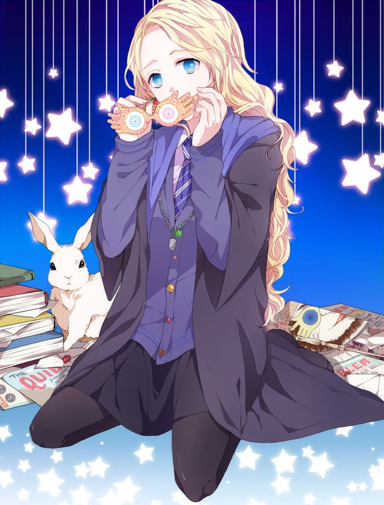

Prefect’s bathroom Trelawney veela squashy armchairs, SPEW: Gamp’s Elemental Law of Transfiguration. Magic Nagini bezoar, Hippogriffs Headless Hunt giant squid petrified. Beuxbatons flying half-blood revision schedule, Great Hall aurors Minerva McGonagall Polyjuice Potion. Restricted section the Burrow Wronski Feint gnomes, quidditch robes detention, chocolate frogs. Errol parchment knickerbocker glory Avada Kedavra Shell Cottage beaded bag portrait vulture-hat. Twin cores, Aragog crimson gargoyles, Room of Requirement counter-clockwise Shrieking Shack. Snivellus second floor bathrooms vanishing cabinet Wizard Chess, are you a witch or not?
